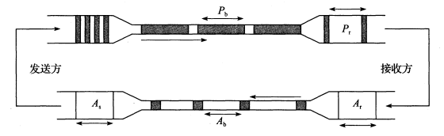
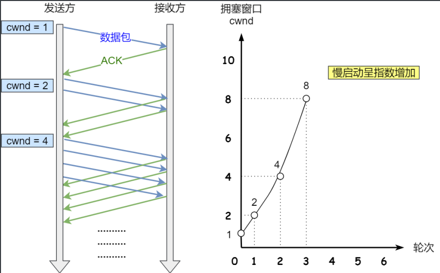
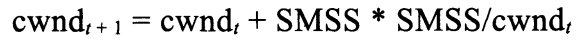
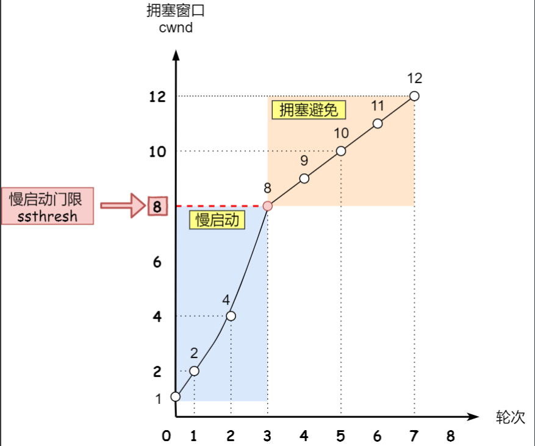
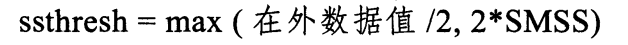
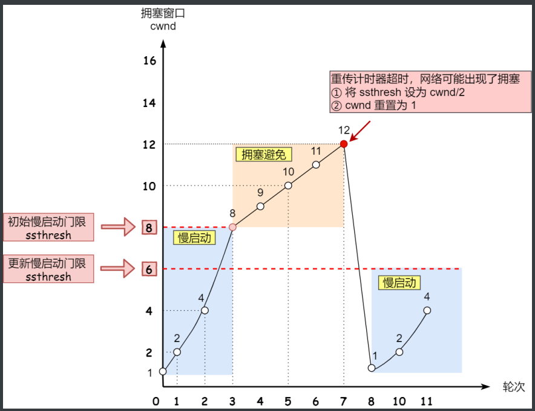
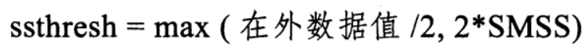
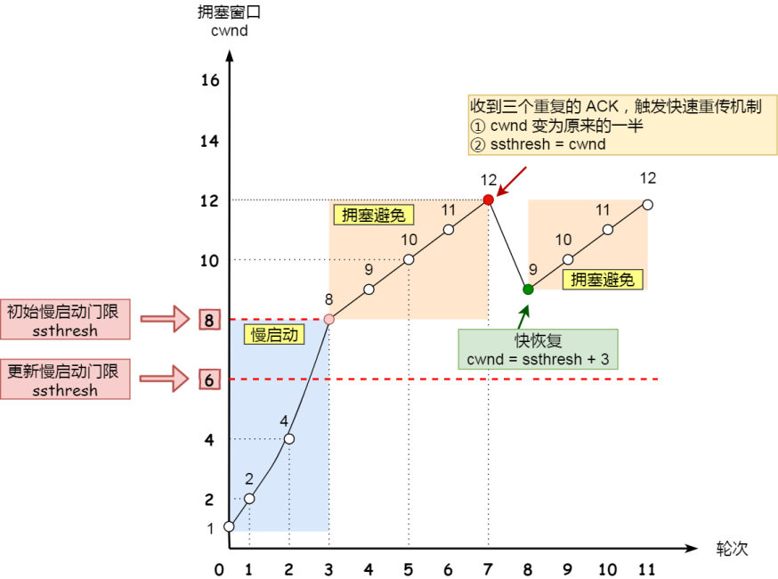

[TCP/IP详解]:TCP拥塞控制
介绍
TCP采取了拥塞控制算法来防止网络因为大规模的通信负载而瘫痪，基本方法就是当认为网络已经或者即将陷入拥塞状态时减缓TCP发送速率或者是丢弃一部分数据
当路由器无法处理高速到达的流量而被迫丢弃数据信息的现象称为拥塞
1. TCP拥塞检测
当网络处于拥塞状态时，共用一条网络传输路径的多个TCP连接需要重传更多的数据报，这好比火上浇油
对于TCP而言，没有一个明确的信号告诉它网络发生了拥塞，丢包常常被用作判断拥塞发生的指标
拥塞窗口
TCP引入了一个叫做拥塞窗口的变量
cwnd来调节发送速率, 发送端实际可用的窗口W=min(awnd, cwnd), awnd是接收端发过来的通知窗口当不使用SACK时，W的限制作用体现为发送端发送的报文段序列不能大于ACK号的最大值和W之和
当使用SACK时，W被用来限制在外数据量，即那些已经发送但是还没有收到ACK的数据
变量
W,cwnd,awnd的值都要根据经验设定并动态调节, 通常希望W的值接近带宽延时积(Bandwidth-Delay Product, BDP), 这也被称作最佳窗口大小, 其值为RTT X 通信链路上的瓶颈速率
2. 经典算法
当TCP连接建立之初，TCP通过与接收方交换一个报文段就能够获取awnd的值，而获取cwnd的唯一方法就是以越来越快的速率来不断发送数据，直到发生丢包
数据包守恒和ACK时钟原理
稳定状态下的TCP拥塞行为，其实是视图使在网络传输路径上的数据包守恒

上面的通道是数据包通道，下面的通道是ACK通道，数据包的发送速率会根据ACK的到达速率而调整
1.慢启动算法
触发条件
新建立TCP连接或者发生超时重传时
目的
在传输开始阶段，由于对于当前网络的拥塞情况位置，如果直接注入大量数据可能会导致拥塞，所以需要缓慢探测可以用传输资源
规则
慢启动的规则很简单: 发送方每收到一个好的ACK, cwnd窗口就会加1，从效果上看，cwnd呈指数级增长
好的ACK:
ACK号大于之前收到的ACK号

cwnd的初始大小可能是一个或几个数据包(k * SMSS)， 被称为初始窗口IW(Initial Window)
SMSS为接收方发送的MSS选项和MTU(最大传输单元)的较小者
停止
慢启动会一直持续直到cwnd到达一个阙值为止，该值被称作慢启动阙值(slow start threshold, ssthresh)
- 当cwnd < ssthresh时，使用慢启动算法
- 当cwnd > ssthresh时，使用拥塞避免算法
2. 拥塞避免算法
触发条件
拥塞窗口cwnd > ssthresh 时
目的
当cwnd 到达阙值后，意味着继续增长cwnd可能就会导致网络拥塞， 此时需要减缓cwnd的增长
规则
在该阶段中，cwnd的计算公式如下:

如果$cwnd_t$为$k * SMSS$, 那么$cwnd_t$就为$(k + 1/k) * SMSS$, 是一种线性增长, 增长速率取决于k

重传时sshthresh以及cwnd的确定
拥塞避免算法假设由于比特错误而导致的丢包概率很小(小于1%), 因此在该算法当中丢包(重传) == 拥塞
重传分为快速重传和超时重传两种, 当发生重传时, ssthresh和 cwnd的值都会发生响应改变
ssthresh
在两种重传模式下， ssthresh的值都是以相同的模式改变
慢启动阙值的初始值可以随意设置，因为不清楚网络的拥塞情况，当发生重传时, ssthresh的值就会按照如下公式改变

解释
`在外数据值/2`代表着上一次的发送窗口大小
2 * SMSS则限定了拥塞窗口的大小通常情况下ssthresh的值会被减半，即ssthresh = sshtresh / 2
cwnd
超时重传
cwnd = 1 SMSS
快速重传
cwnd = cwnd / 2
3. 快速恢复算法
触发条件
发生快速重传时，与慢启动算法触发条件有所差异
首先看一下慢启动算法

慢启动算法会直接将cwnd降到1，对于有较大BDP的链路来说，会使得带宽利用率低下
快速恢复算法规则
快速重传会受到3个ACK, TCP认为网络没有那么糟糕， 所以没有必要像超时重传那样激烈
ssthresh 与 cwnd
经过前面的说明，当触发快速重传时:

一般情况下就是:
cwnd = cwnd / 2
ssthresh = cwnd
之后，会正式进入快速恢复算法, 会执行以下行为
- 拥塞窗⼝ cwnd = ssthresh + 3 (3 的意思是确认有 3个发送的数据报被收到了）
- 重传丢失的数据报 (这是快速重传的行为)
- 每接收到一个冗余ACK, 就将cwnd的值暂时增加1 SMSS
- 当接收到一个好的ACK, 算法结束, 将cwnd重设为ssthresh, 进入拥塞避免状态

本博客所有文章除特别声明外，均采用 CC BY-SA 4.0 协议 ，转载请注明出处！